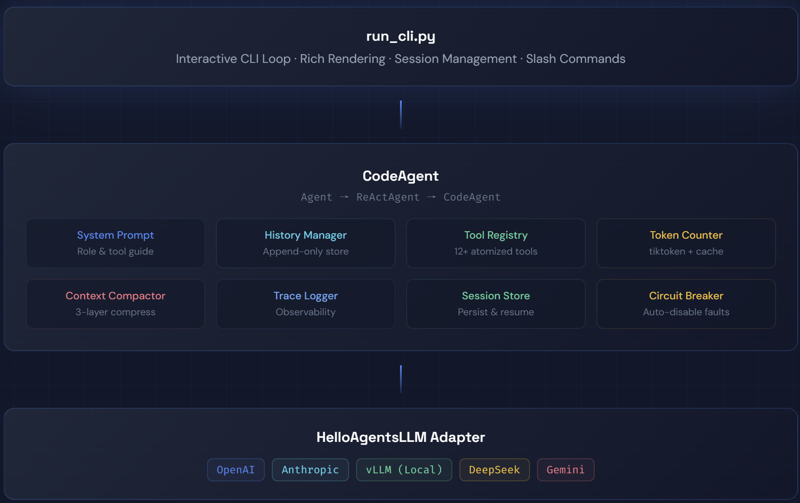
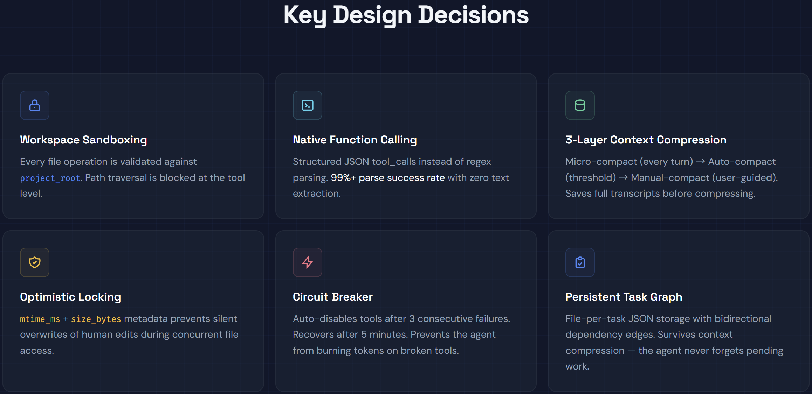
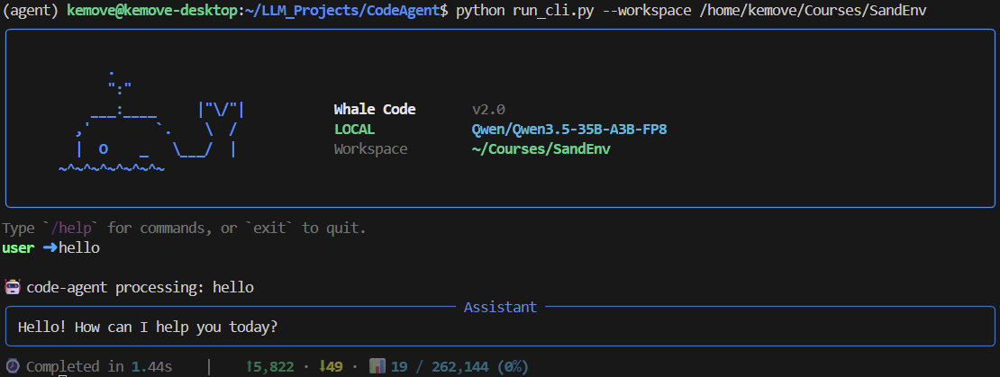

Structured Function Calling
Native tool-calling JSON replaces fragile regex parsing, delivering robust action execution and high parse reliability in production-style loops.
Whale Code is a from-scratch coding agent framework built around a strict ReAct loop and OpenAI-compatible function calling. It combines safe atomized tools, layered context engineering, and persistent task orchestration to solve real repository work end-to-end.
The framework focuses on reliability under real coding pressure: structured tool calls, safe writes, resilient long-context behavior, and observable execution.
Native tool-calling JSON replaces fragile regex parsing, delivering robust action execution and high parse reliability in production-style loops.
Micro-compaction, auto-summary compaction, token tracking, and transcript persistence keep long sessions responsive and memory-efficient.
Read/Write/Edit/Glob/Grep are sandboxed to workspace scope, support optimistic locking, and return structured status codes for deterministic control.
File-backed tasks with dependency edges survive context compression and support multi-step delivery across long development sessions.
Rich terminal UI, slash commands, session snapshots, resume/load flows, and readable tool telemetry make daily usage smooth.
Includes MBPP+, HumanEval+, ClassEval, AIME, and SWE-bench workflows with reproducible scripts and explicit evaluation pipelines.
Core assets from the project show how Whale Code is engineered: top-level architecture, key design map, and real CLI interaction.

End-to-end ReAct lifecycle with tool execution, observation flow, context compaction, and persistence integration.

Design decisions around reliability, traceability, and safe autonomous coding in local repositories.

Interactive, developer-first terminal loop with observability and command ergonomics.
Whale Code executes with a strict loop that keeps reasoning and action aligned: Think → Act → Observe → Re-think.
Model analyzes objective, history, and state under policy constraints.
Calls specialized tools through structured function-calling payloads.
Processes typed tool responses with status and machine-readable fields.
Updates plan, compacts context if needed, and iterates safely.
Measured with Qwen3.5-35B-A3B-FP8, showcasing strong pass rates on coding and reasoning-oriented benchmarks.
| Benchmark | Tasks | Pass Rate | Date |
|---|---|---|---|
| MBPP+ | 378 | 98.9% | 2026-03-22 |
| HumanEval+ | 164 | 96.9% | 2026-03-22 |
| ClassEval | 100 | 90.0% | 2026-03-22 |
| AIME | 30 | 80.0% | 2026-03-22 |
Start the local model backend, then launch the CLI in a target workspace and assign coding tasks directly.
CUDA_VISIBLE_DEVICES=2 vllm serve Qwen/Qwen3.5-35B-A3B-FP8 \
--port 8000 \
--gpu-memory-utilization 0.92 \
--reasoning-parser qwen3 \
--enable-auto-tool-choice \
--language-model-only \
--tool-call-parser qwen3_xml
python run_cli.py --workspace /working/space
> Read the main entry point and summarize its structure
> Add error handling to the data processing pipeline